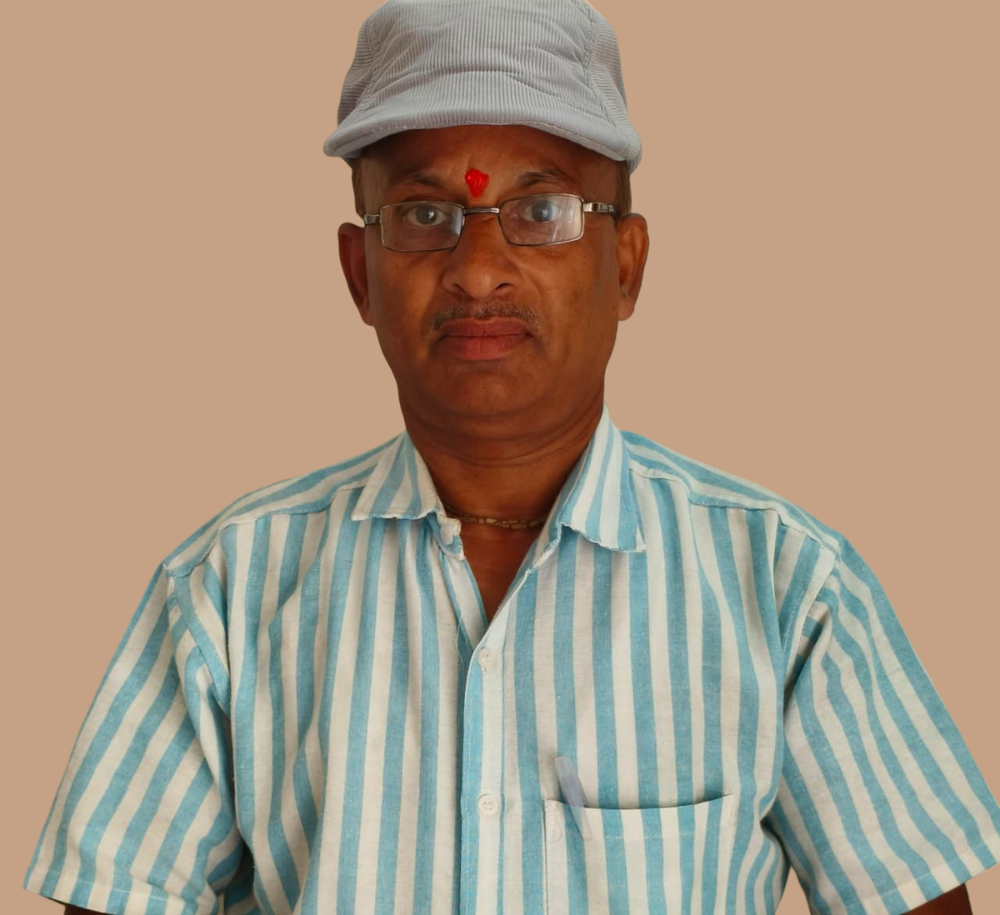
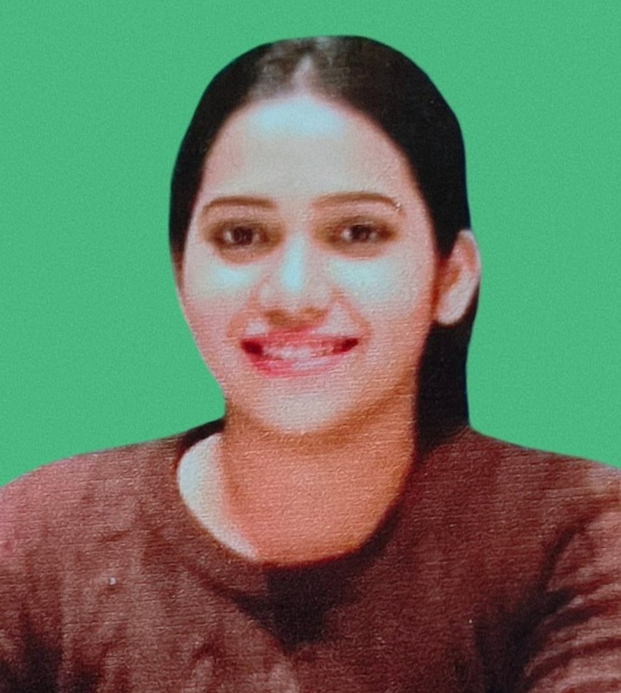
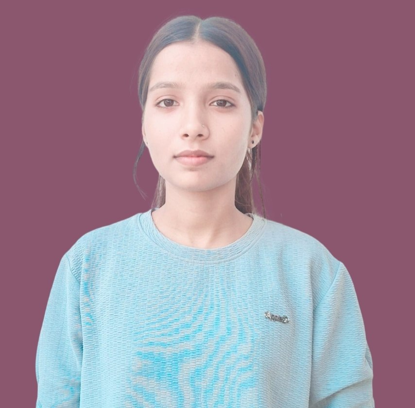
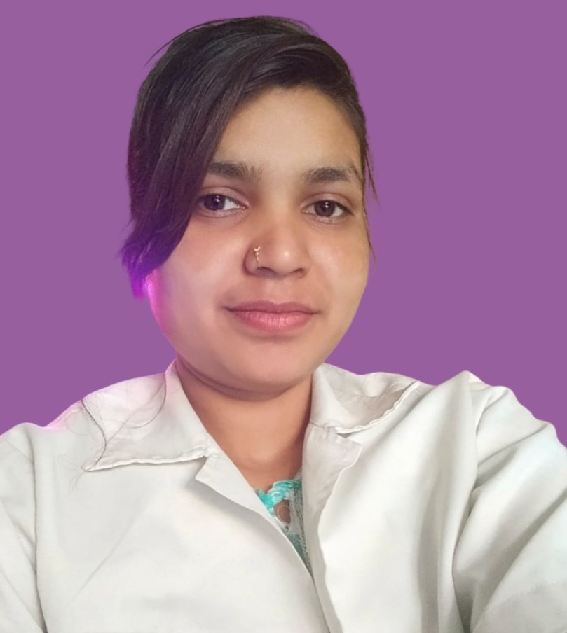

Keshmati Singh
Foundation Representative
Social service coordination and welfare support.
Dedicated members working with empathy, discipline and responsibility.
Social service coordination and welfare support.
President
Social Service Coordination & Welfare Support
Project Coordinator
Community Outreach & Program Management
Project Coordinator
Medical Supervision & Patient Care
MBBS - Medical Supervision & Patient Care

Manager cum Center in Charge - Overall Operations & Patient Care
Physcologist - Counseling & Mental Health Support

Accountant - Financial Management & Administrative Support

Supervisor - Daily Operations & Patient Care Coordination

Nurse - Medical Assistance & Patient Care
Outreach cum Supervisor - Community Engagement & Support Services
हर व्यक्ति के साथ गरिमा और संवेदना।
निजी जानकारी को सुरक्षित रखना।
परिवार को सही सलाह और सहयोग।
उम्मीद, अनुशासन और नई शुरुआत।
“A dedicated team turns compassion into organized action.”